User Guide¶
This guide covers how to use the main features of MyAIAssistant. As a web application, the configuration is set using a config.yaml, to specify where to access the database for the main entities, like tasks, organizations, documents, and where to access the vector store to keep document chunks and embeddings.
As of now this tool should run locally. LLM is done locally, or remotely using one of the existing AI service (OpenAI, Anthropic, Mistral, Openrouter.ai, Huggingface).
Architecture of the solution¶
The following figure illustrates the components of this repository and how they work together:
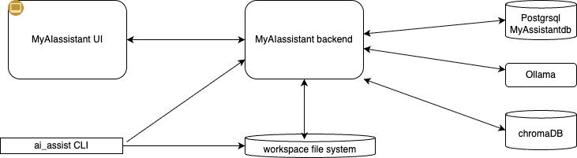
- The backend server, exposes API to be able to manage Organizations, Projects, Tasks,TaskPlan, and knowledge references.
- The frontend single page application, runs in a Web browser and interacts with the backend to manage day to day user interactions
- the ai_assist CLI, helps to manage workspace and other interesting commands to manage content.
The backend uses database server, Postgresql, a vector database, ChromaDN, and a local LLM server, ollama.
Setup¶
Option 1: One-line Install (No Clone Required)¶
This script:
- Checks for Docker and offers to install it if missing
- Downloads docker-compose.yml, creates a default config.yaml and scripts for database management
- Sets up the installation in ~/myaiassistant (override with MYAIASSISTANT_DIR)
After installation:
Option 2: Clone and Run¶
git clone https://github.com/jbcodeforce/MyAIAssistant.git
cd MyAIAssistant
docker-compose up -d
# Web UI: http://localhost:80
Prerequisites¶
For Docker Deployment - User¶
- Docker 20.10 or higher
- Docker Compose 2.0 or higher
- Ports 80 and 8000 available
For Local Development - Developer¶
- Python 3.12+
- Node.js 18+
- uv package manager (recommended)
Configuration¶
There is a config.yaml to set access to the database and vector DB used. There is no need to change anything for first utilisation. There is a default database to support this user guide.
In the future, a user may change the following elements of the config.yaml, to separate knowledge and project per major context. Like a student working for his/her university projects, then later for a company during a internship. The student may use two databases for that. The same way, a consultant who wants to have separate databases for very different set of activities linked to different knowledge and customer industry:
# Database settings
database_url: "sqlite+aiosqlite:////app/data/myaiassistant.db"
# Knowledge base / Vector store settings
chroma_persist_directory: "/app/data/chroma"
chroma_collection_name: "km-db"
database_urlcan be another name to keep data for a separate context. The data folder will include the database file,chroma_persist_directory:: the reference to the folder to persiste vector store and document chunkschroma_collection_name: chrome collection name. From now there is one collection. It may be relevant in the future to support adding more collection and to query at the collection level.
Launch the Application¶
Docker Compose (Recommended)¶
The fastest way to run the full application:
Access points:
| Service | URL | Description |
|---|---|---|
| Frontend | http://localhost:80 | Vue.js application. For user. |
| Backend API | http://localhost:8000 | FastAPI server. During this app development. |
| API Docs | http://localhost:8000/docs | Interactive Swagger UI. During this app development. |
Local Development¶
For development with hot reload:
First start postgresql DB
Then the backend:
Organization Management¶
The goal is to potentially link tasks to a project, and projects to an organization. An organization can be a customer, a university or a non-profit organization.
It is not mandatory to use org and project to manage to do tasks, but it helps when you are engaged with different projects and want to classify tasks per project. An organization may also being fictive, just here to help organize work.
- From the left Navigation, select Organizations
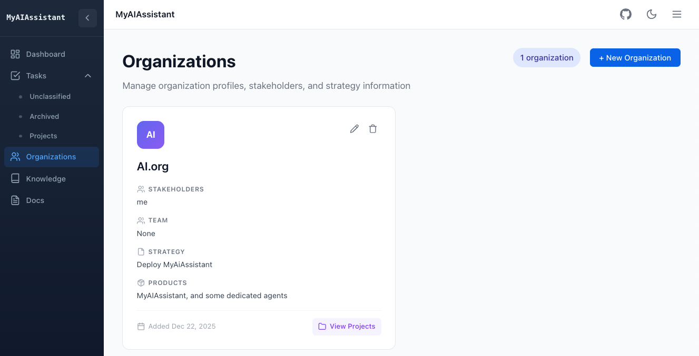
- Create a new org:
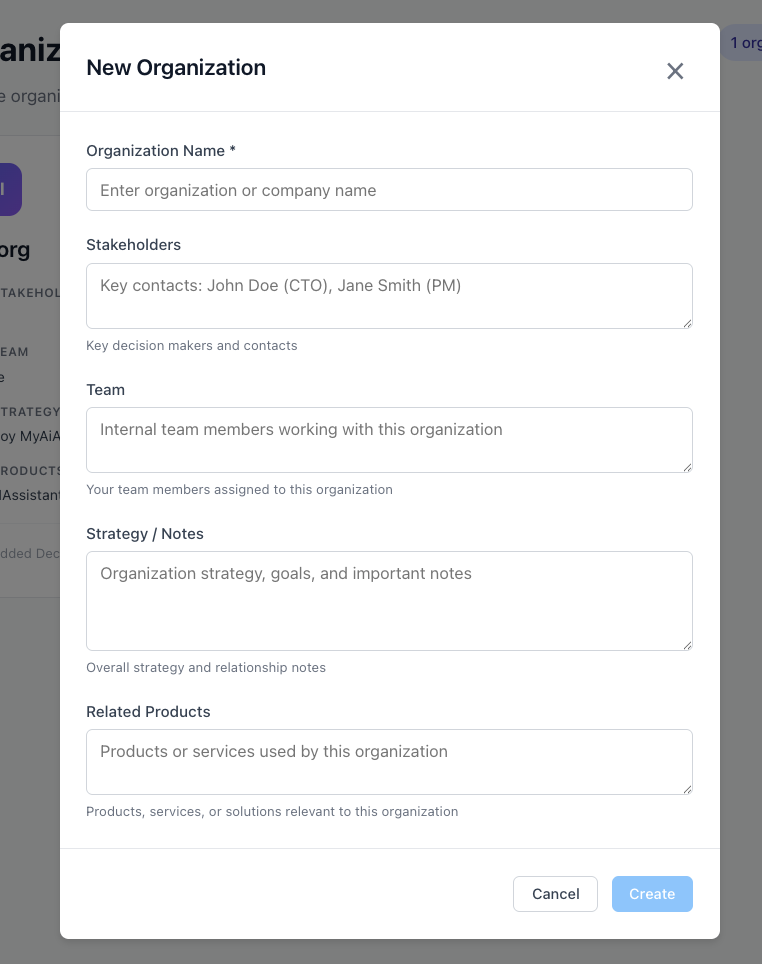
Only the organization name is mandatory. The rest may be updated later via the edit button. Related Products is to track the interests the org may have to our own products. This will be an interesting metrics to report on.
- Once one project is added to the organization it will be possible to navigate from the Orgranization tile, via the
View Projectsbutton, to the project view.
Project Management¶
Project is here to group related tasks. It has a simple life cycle:
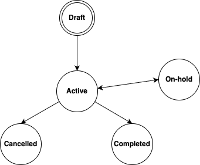
-
From the left Navigation, select Project
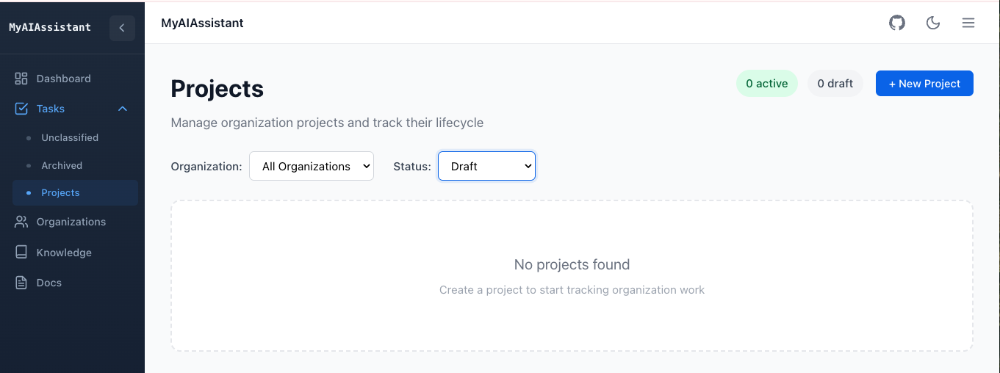
-
Create new project:
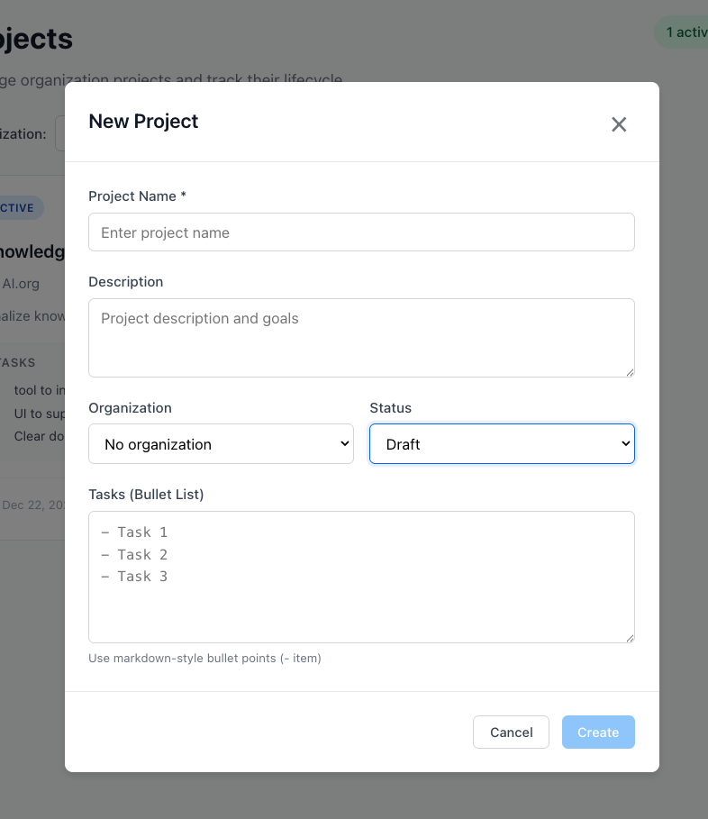
The tasks list section is NOT the tasks that will be managed by the task manager. It is just an entry field for small tasks, or tasks related to other people for this project, or high level things to address. This is an optional field.
- Within the project home page, it is possible to filter the project per organizations, or status.
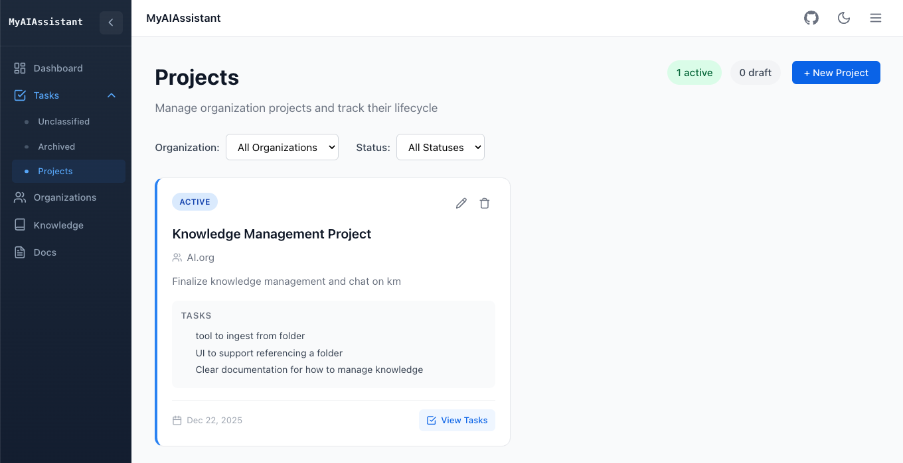
Task Management¶
The Eisenhower Matrix¶
The Dashboard displays Todos/Tasks in a 2x2 matrix based on urgency and importance:
| Urgent | Not Urgent | |
|---|---|---|
| Important | Do First | Schedule |
| Not Important | Delegate | Eliminate |
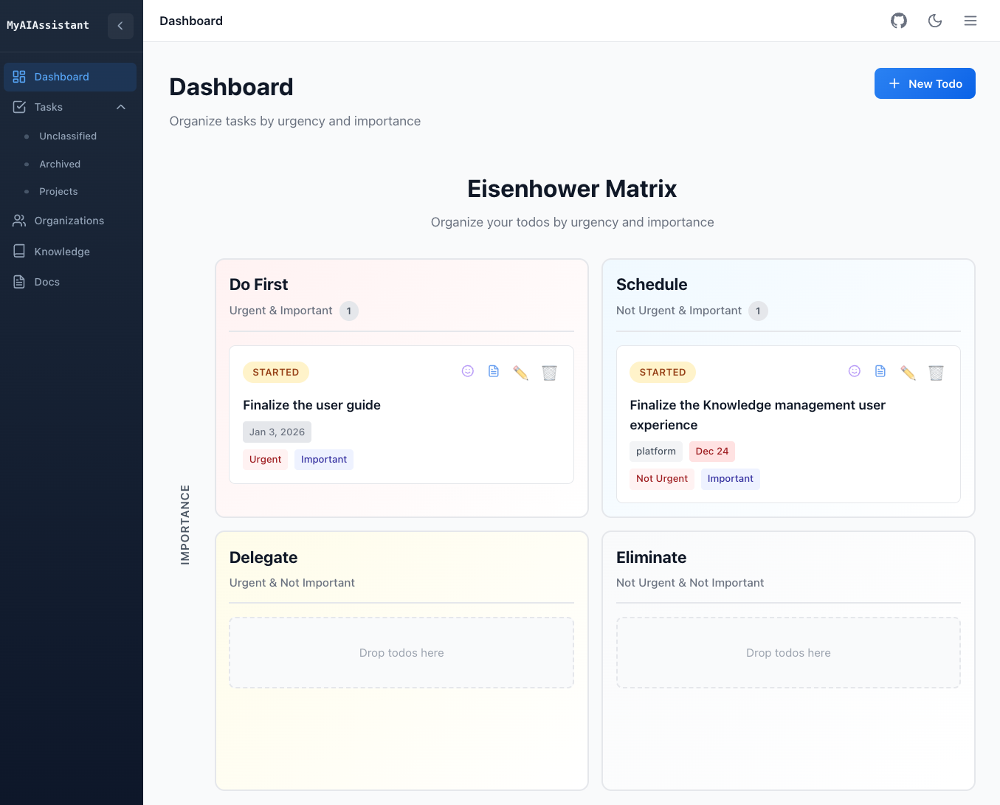
The state of a task is described in the diagram below:
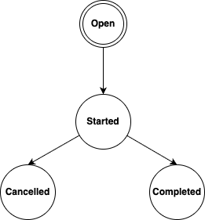
Creating Task¶
- Click + New Todo
- Enter the todo title and optional description (which support markdown syntax)
- Set urgency and importance levels. If kept unclassified, the task is created and user will need to update from the
Unclassified view. - Optional, specify a project and a Due Date
- Click Create
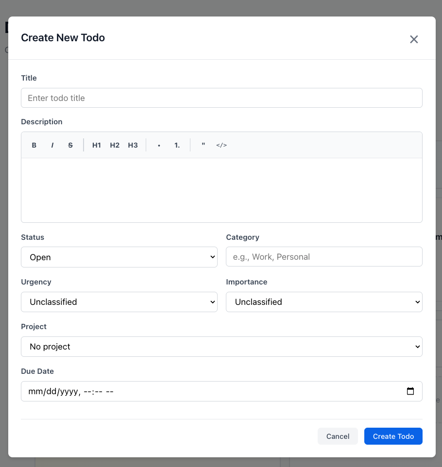
Moving Task¶
Drag and drop todos between quadrants to change their priority classification.
Completing Task¶
Update the todo card to mark it complete. Completed todos move to the archive.
Unclassified Tasks¶
Todos without urgency/importance settings appear in the Unclassified view. Assign them to quadrants to include them in the matrix.
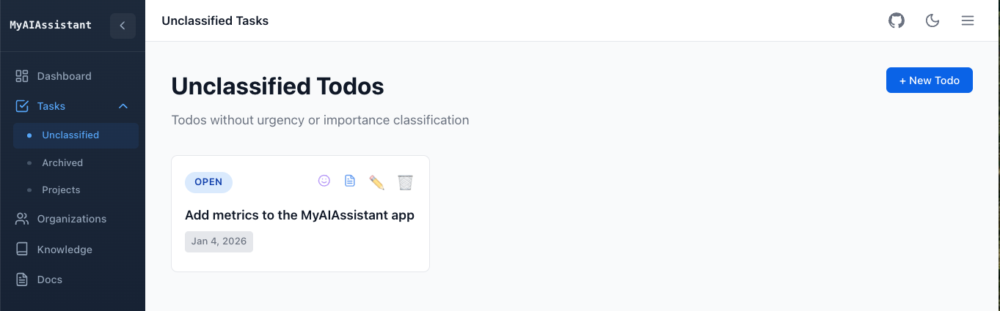
Chat with Task¶
From the Dashboard, you can chat with the AI about specific tasks:
-
Click the chat icon (smiley) on any task card
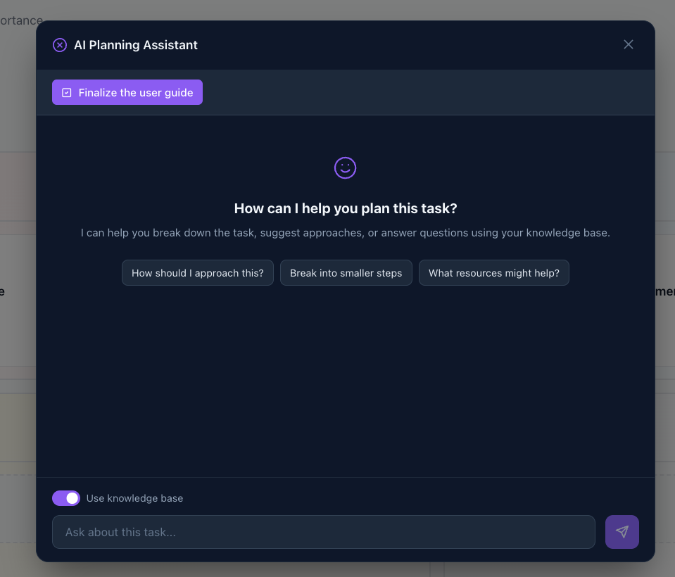
-
Ask questions about how to approach the task
- The AI may use your knowledge base to provide relevant context and suggestions (set the toggle on)
- The result is a task plan that may be saved to the database and linked to the selected task
This helps when planning complex tasks by connecting your reference materials to your action items.
The response can build a plan, that may be saved in the database as task_plan.
Task plan¶
At the task level, it is possible to access to a plan, elaborated by the AI. At the task tile, select the document icon, then the task plan is displayed using markdown layout, and can be edited.
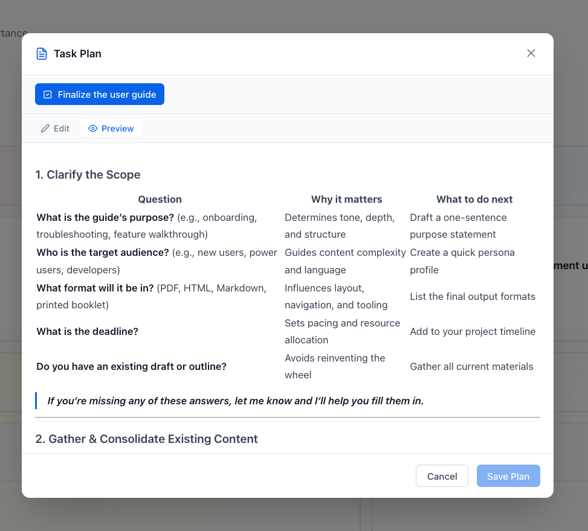
Knowledge Base¶
The Knowledge Base stores references to documents and web resources that you want to search and query using AI.
Adding Knowledge Items¶
- Navigate to the Knowledge page from the main navigation
- Click + Add Knowledge in the top right
- Fill in the form:
- Title: A descriptive name for the document
- Description: Optional summary of the content
- Document Type: Choose between Markdown or Website
- Source: For Markdown, enter a local file path or URL. For websites, enter the URL
- Category: Optional grouping (e.g., "Documentation", "Reference")
- Tags: Comma-separated keywords for filtering
- Click Create to save
Indexing Documents¶
Before you can search or chat with your knowledge base, documents must be chunked, indexed and embbedded:
- Index a single item: Click the index button (magnifying glass with plus) on any row
- Index all items: Click Index All in the header to index all active/pending items
Indexing function, extracts text from documents and creates vector embeddings for semantic search.
Filtering Knowledge Items¶
Use the filter bar to narrow down items:
- Type: Filter by Markdown or Website
- Status: Filter by Active, Pending, Error, or Archived
- Category: Filter by assigned category
- Tag: Search by tag name
Click on any tag in the table to filter by that tag.
Querying the Knowledge Base (RAG Chat)¶
Once you have indexed documents, you can ask questions and get AI-powered answers based on your knowledge base content.
Starting a Chat Session¶
- Go to the Knowledge page
- Click the green Ask AI button in the header
- A chat window opens where you can ask questions
Asking Questions¶
Type your question in the input field and press Enter or click the send button. The AI will:
- Search your indexed documents for relevant content
- Use the most relevant passages as context
- Generate an answer based on that context
Suggested Prompts¶
When you first open the chat, you'll see suggested prompts to get started:
- "What topics are covered?" - Get an overview of your knowledge base
- "Summarize main points" - Get a summary of key information
- "Key concepts" - Identify important concepts from your documents
Viewing Sources¶
Each AI response shows which documents were used to generate the answer:
- Below the response, click "X sources used" to expand
- View the source document title, relevance score, and snippet
- Use this to verify the information or explore the original document
Tips for Better Results¶
- Be specific: "How do I configure Docker deployment?" works better than "Docker?"
- Ask one question at a time: Complex multi-part questions may get incomplete answers
- Reference context: "Based on the API documentation, how do I..." helps focus the search
- Index relevant documents: The AI can only answer based on what's been indexed
Conversation Context¶
The chat maintains conversation history within a session. You can:
- Ask follow-up questions that reference previous answers
- Clarify or drill down into topics
- Request more detail on specific points
The conversation resets when you close the chat window.
Metrics¶
The metrics view presents a set of task and project metrics.
ai_assist CLI¶
The ai_assist CLI manages workspaces and knowledge resources from the command line. It provides an alternative to the web UI for automation, scripting, and batch operations and aim to prepare using the backend and frontend in an isolated workspace.
Installation¶
Features¶
| Command Group | Commands | Description |
|---|---|---|
init |
- | Initialize a new workspace with local and global directories |
workspace |
status, list, clean |
View workspace configuration, list registered workspaces, clean cache/history |
config |
show, get, set, edit |
View and modify workspace configuration |
global |
status, config, prompts, agents, tools, tree |
Manage shared resources in ~/.ai_assist |
knowledge |
process |
Batch process documents from JSON specification files |
Quick Start¶
# Initialize workspace in current directory
ai_assist init
# Check workspace status
ai_assist workspace status
# Process knowledge documents from JSON file
ai_assist knowledge process documents.json
# View global resources
ai_assist global tree
Directory Structure¶
The CLI creates two directory structures:
- Global home (
~/.ai_assist/): Shared prompts, agents, tools, models, and cache - Workspace (local): Configuration, vector database, history, summaries, and notes
Knowledge Processing¶
Batch index documents using a JSON specification file: